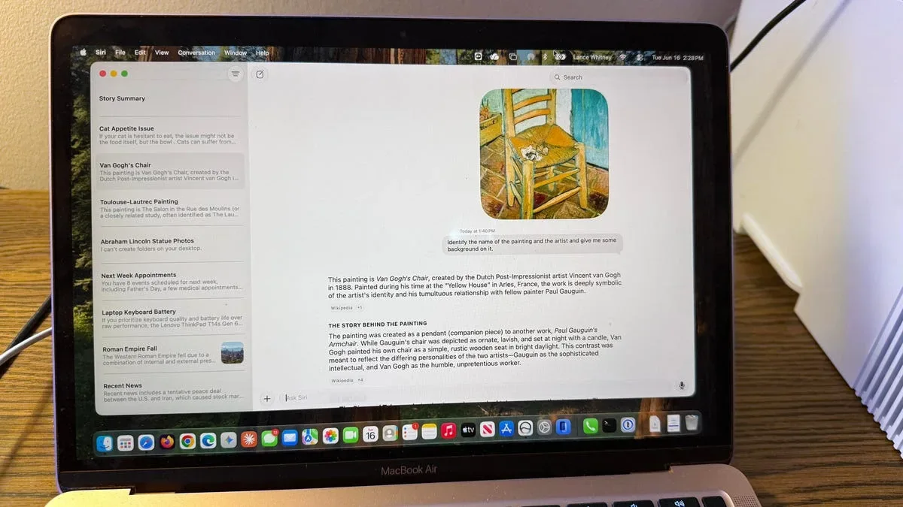
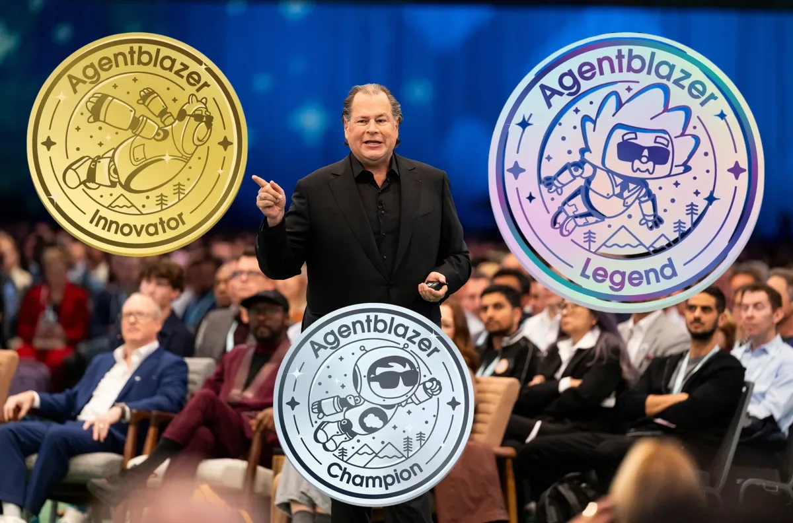

ИсследованияИндустрия
GPT-5.5 Instant обошёл ответы врачей в медицинских тестах OpenAI
GPT-5.5 Instant обошёл врачей в медицинских тестах — и доступен бесплатно
The Decoder
18 июн. 2026 г.Сохранённые материалы за этот день.
72 материалов
GPT-5.5 Instant обошёл врачей в медицинских тестах — и доступен бесплатно

Claude Code теперь превращает сессию разработки в живую веб-страницу для всей команды

Как подозрения в китайских связях SK Telecom и дыры в безопасности Fable 5 уничтожили доверие к Anthropic

Match Group выяснила, как одинокие американцы относятся к ИИ в свиданиях: 47% против, но 64% допускают помощь.

Кто получил $310 млн на симуляции реального мира — и ещё девять крупных раундов недели

Amazon готовится напрямую конкурировать с Nvidia, предлагая собственные ИИ-чипы Trainium сторонним заказчикам.
DeepMind следит за своими ИИ-агентами как за сотрудниками под подозрением — и уже проверил это на миллионе задач
FERC обязала операторов ускорить подключение дата-центров — расходы лягут на сами центры.

Два API-вызова — и агент работает в изолированном окружении с памятью и инструментами.
iPod Shuffle снова в рекламе, Light Phone берут 20-летние — что такое slowtech и почему на нём зарабатывают

OpenAI добавила в ChatGPT Enterprise кредитную аналитику и гибкие лимиты для управления расходами.
ИИ-клон знаменитости даёт советы голосом оригинала — уже за $14,99 в месяц

Amazon расследует дело трёх инженеров, выступивших против дата-центров на слушаниях горсовета Сиэтла
General Intuition, стартап по обучению ИИ-агентов, близок к привлечению $300 млн от Безоса и Шмидта.
Техработники объединяются в super PAC, чтобы бороться с антирегуляторным лобби Big Tech — в предвыборной гонке уже $5 млн.

Siri ИИ на Mac: первое знакомство — ассистент стал умнее, но до ChatGPT ещё далеко.

Переход на чистую Ubuntu 26.04 на Asus GX10: +15 Вт, фикс через dgx-spark-mlnx-hotplug, свежие драйверы и ZFS-компрессия.

Бесплатный MCP-сервер с 257 тысячами экранов для поиска дизайн-референсов — LazyWeb от экс-product lead Duolingo.

Как автоматизировать оценку RAG без программирования? История с Claude Code.
Козы вместо нейронов: как исследователь Microsoft опроверг идею о сознании LLM прямо в Age of Empires II

Девелоперам предложили готовый маршрут внедрения ИИ — от аудита до пилота за год

Anthropic сама добивалась регулирования ИИ — и первой попала под удар. Что случилось с Fable 5

ЛеКун: ИИ-лаборатории живут на деньги инвесторов и рискуют лопнуть как пузырь

Salesforce следит, кто из сотрудников не использует ИИ — и показывает это начальству

Adobe обновляет Firefly: единый ИИ-интерфейс с памятью проектов и новыми возможностями редактирования

Adobe добавила ИИ-ассистентов в Photoshop, Premiere, Illustrator, InDesign и Frame.io — они помогают с рутинными задачами.

Три opensource-фреймворка для локального развёртывания ИИ-агентов: Gaia от AMD, Ailoy на Rust и Opperator с терминальным интерфейсом.
Adobe научила Photoshop и Premiere выполнять рутину по текстовой команде — и вышла за пределы своих приложений

2 млн заблокированных аккаунтов Claude за год — разбираем 5 триггеров и чек-лист защиты

Как в Claude Code разделить работу между Opus и DeepSeek V4 и сократить расходы на токены в десятки раз.